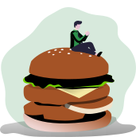

Reduce food waste

Replate connects your non-profit organization with businesses who have food that they want to donate. All you have to do is have your volunteers sign up with Replate and they can easily choose which donations to pickup and deliver to you. Find food donations to help feed those in need and help reduce food waste in your community. It’s that easy to make a difference.